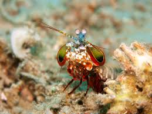

Fatos sobre o Stomatopoda
Informações gerais
Eyes are testaments to evolution’s creativity. They all do the same basic things—detect light, and convert it into electrical signals—but in such a wondrous variety of ways. There are single and compound eyes, bifocal lenses and rocky ones, mirrors and optic fibres. And there are eyes that are so alien, so constantly surprising, that after decades of research, scientists have only just about figured out how they work, let alone why they evolved that way. To find them, you need to go for a swim. Scientific name: Odontodactylus scyllarus.
Esmagadoras
As maiores esmagadoras, tais como exemplares de Odontodactylus scyllarus, são capazes de desferir um dos mais rápidos e violentos golpes do reino animal, um soco que pode apresentar a velocidade de um tiro calibre. (equivalente a 720km/h) e uma força de impacto de 60 kg/cm². Essa força esmagadora é a responsável pelo seu título de "lagosta-boxeadora" e é capaz de facilmente quebrar a carapaça de um caranguejo, as conchas duras e calcificadas de gastrópodes ou até mesmo quebrar o vidro reforçado de um aquário.
.jpeg)
Boxe
Também conhecidas como esquilas ou lagosta-boxeadora, espalhadas pelas costas dos mares tropicais e subtropicais. Além das patas, elas apresentam uma silhueta característica, devido ao grande comprimento aparentemente de seu abdómen. Os ovos ficam ligados por uma massa gelatinosa que a mãe carrega contra o ventre até que eclodem, limpando-os sem parar.
.jpeg)